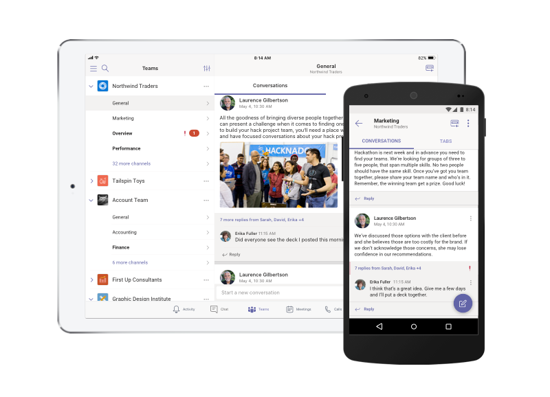

Welcome to Microsoft Teams
Microsoft Teams is a collaboration app that helps your team stay organized and have conversations—all in one place. Here's a quick look at the left hand side of Teams.
-
Teams - Find channels to belong to or create your own. Inside channels you can hold on-the-spot meetings, have conversations, and share files.
-
Chats - Chat amongst colleagues or friends, on any topic.
-
Meetings - See everything you’ve got lined up for the day/week, Or schedule a meeting. This calendar syncs with your Outlook calendar.
Conference Bridge numbers can be made available upon request. -
Calls - You can call anyone within Teams. We will soon release landline and mobile calling, directly form teams.
-
Activity - Catch up on all your unread messages, @mentions, replies, and more.
Use the command box at the top to search for specific items or people, take quick actions, and launch apps.
Get the app you want
|
